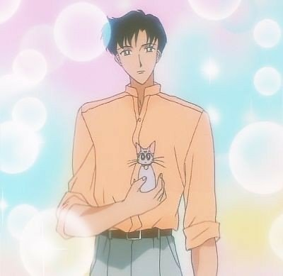

<- Повернутися на головну сторінку
<- Красуня воїн Сейлор Мун
<- Сейлор воїтельки
Мамору Шиба

Головна інформація
| Імена |
Мамору Шиба, Такседо Маск, Принц Ендіміон, Король Ендіміон (у майбутньому) |
| Японське ім'я |
地場 衛 |
| Заняття |
Союзник Сейлор Мун, студент |
| Друзі(не зовсім) |
Усагі Цукіно
|
| Союзники |
Сейлори |
| Перша поява |
1 серія (1 сезон) |
Особистість:
Мамору - чоловічий головний герой історії. Серйозний, сильний та харизматичний хлопець, але в той же час любив задирати Усагі при будь-якій можливості. Має маленьку силу порівняно з Сейлорами, але виступає як підтримка та відволікаючий фактор щодо ворогів. Має достатньо дивні стосунки з Усагі, час від часу кидав дівчину. Врешті-решт, зробив Усагі пропозицію руки і серця, але був вбитий Галаксією. В кінці повернувся до життя, і зустрівся з Усагі. Його невід'ємними атрибутами є трость та червона троянда. В минулому житті був Принцем Ендіміоном, що кохав Принцесу Сереніті, і помер, намагаючись її захистити
Сім'я:
У хлопця були мама і тато, які загинули у автокатастрофі. Сам він вижив завдяки диву
Майбутнє:
Буде коронований разом з Неокоролевою Сереніті, буде доня - Чібіуса
Галерея